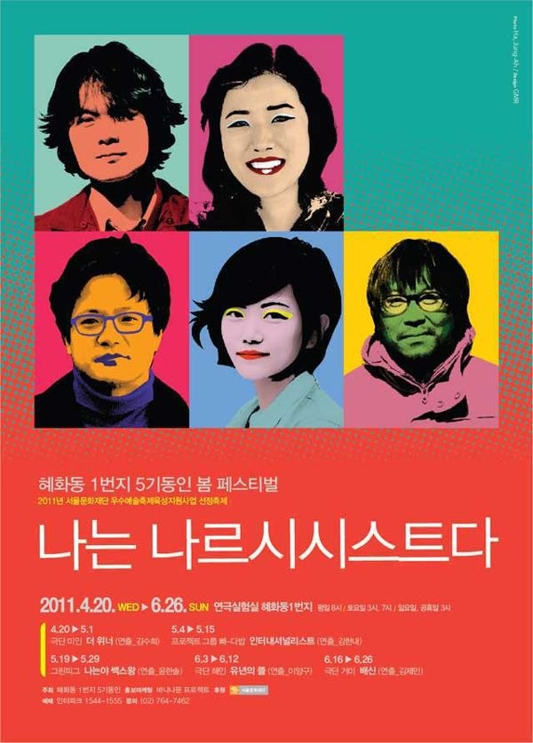

그린피그 > 아카이브 > 나는야쎅쓰왕
그린피그 공동구성, 윤한솔 연출

2011.5.19–29 / 연극실험실 혜화동1번지 2011.8.14–15 / 국립극단 소극장 판 2012.5.24–6.3 / 정보소극장 2012.9.1 / 그린피그 연습실 - 덴마크 오르후스 페스티벌 초청
이전: 〈누가 무하마드 알리의 관자놀이에 미사일 펀치를 꽂았는가?〉 | 다음: 〈연변엄마〉 아카이브로 돌아가기
최종 수정 2026.11.9